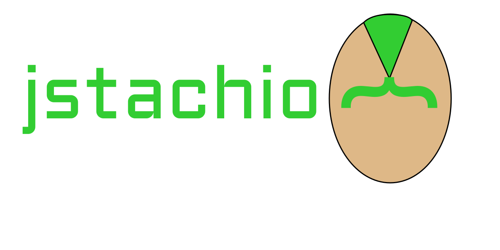

JStachio Version: 0.11.1
User Guide
JStachio: A type-safe Java Mustache templating engine.Templates are compiled into readable Java source code and value bindings are statically checked using the Java Annotation processing framework.
Contents
Quick Start
Follow these steps:- Setup your build correctly
- See or copy Java Code example.
- Read about mustache syntax if you are not familiar with it.
- Explore configuring to make JStachio your way.
Use Cases
There are three main use cases that this templating engine is designed around with the cross cutting feature of type safety and performance:- Templating web applications for traditional SEO friendly HTML server side rendering.
- Templating for code generating.
- General purpose inline templating instead of using StringBuilder and or a more powerful JEP 430 aka stringtemplates (still in preview)
Mustache Syntax
The format of the templates should by default be Mustache specifically v1.3.0 syntax . The syntax is informally explained by the latest mustache manual and formally explained by the spec.N.B. currently "https://jgonggrijp.gitlab.io/wontache/mustache.5.html" is the latest manual and NOT "https://mustache.github.io/mustache.5.html".
There are some subtle differences in JStachio version of Mustache due to the static nature notably
how Map<String, ?> is handled. The contents of a Map are
checked last even if it is a directly on the top of the context stack.
Most of the documentation of what mustache spec options are implemented and how
are discussed in the @JStache annotation.
Java Code
Simply annotate a class withJStache like
below:
/*
* Annotate the root model with an inline mustache template
*/
@JStache(template = """
{{#people}}
{{message}} {{name}}! You are {{#ageInfo}}{{age}}{{/ageInfo}} years old!
{{#-last}}
That is all for now!
{{/-last}}
{{/people}}
""")
public record HelloWorld(String message, List<Person> people) implements AgeLambdaSupport {}
public record Person(String name, LocalDate birthday) {}
public record AgeInfo(long age, String date) {}
public interface AgeLambdaSupport {
@JStacheLambda
default AgeInfo ageInfo(Person person) {
long age = ChronoUnit.YEARS.between(person.birthday(), LocalDate.now());
String date = person.birthday().format(DateTimeFormatter.ISO_DATE);
return new AgeInfo(age, date);
}
}
HelloWorldRenderer class.
While you may use the generated classes directly to render HelloWorld instances in some cases it is
easier and better to use JStachio
to render directly from the model without referencing generated code.
@Test
public void testPerson() throws Exception {
Person rick = new Person("Rick", LocalDate.now().minusYears(70));
Person morty = new Person("Morty", LocalDate.now().minusYears(14));
Person beth = new Person("Beth", LocalDate.now().minusYears(35));
Person jerry = new Person("Jerry", LocalDate.now().minusYears(35));
var hello = new HelloWorld("Hello alien", List.of(rick, morty, beth, jerry));
// render without reflective lookup
String actual = HelloWorldRenderer.of().execute(hello);
// or use JStachio reflective lookup which will also apply filters and other advise
actual = JStachio.render(hello);
String expected = """
Hello alien Rick! You are 70 years old!
Hello alien Morty! You are 14 years old!
Hello alien Beth! You are 35 years old!
Hello alien Jerry! You are 35 years old!
That is all for now!
""";
assertEquals(expected, actual);
}
Modules
JStachio is fully modularized consequently it is has many jars. The listing of modules at the end of the guide explain what each module does as well as its Maven GAV.Code Generation Modes
JStachio provides two major modes for how code is generated.- JStachio enchanced mode:
JStacheType.JSTACHIO - Zero dependency mode:
JStacheType.STACHE
JStacheType.JSTACHIO is the preferred mode and is the default.
On the other hand Zero dependency mode will generate
code that will only have references to itself and the JDK base module (java.base).
This is often desirable if you want to use JStachio for a code generation library
(e.g. another annotation processor).
How it works
When the compiler compiles your annotated code JStachio's annotation processor will run. An annotation processor has access to the symbolic tree of the source code being compiled. The classes that are annotated with JStachio's annotations are analyzed to find a template and various other configuration. Once the template is found it is parsed while referring to the symbolic tree of the class annotated with JStache (the model). From that it deduces how to generate Java code that will navigate the model and output text based on the template.
More explanation is available on JStache javadoc.
Installation
JStachio uses the Java annotation processor facility to generate code. You will need to set that up otherwise code will not be generated.Maven
Maven configuration has two choices.annotationProcessorPaths or classpath.
Option 1 annotationProcessorPaths
<properties>
<io.jstach.version>VERSION</io.jstach.version>
</properties>
...
<dependencies>
<dependency>
<groupId>io.jstach</groupId>
<artifactId>jstachio</artifactId>
<version>${io.jstach.version}</version>
</dependency>
</dependencies>
...
<build>
<plugins>
<plugin>
<groupId>org.apache.maven.plugins</groupId>
<artifactId>maven-compiler-plugin</artifactId>
<version>3.8.1</version>
<configuration>
<source>17</source> <!-- 17 is the minimum -->
<target>17</target> <!-- 17 is the minimum -->
<!-- You may not need annotationProcessorPaths if jstachio-apt is added as an option dep -->
<annotationProcessorPaths>
<path>
<groupId>io.jstach</groupId>
<artifactId>jstachio-apt</artifactId>
<version>${io.jstach.version}</version>
</path>
<!-- other annotation processors -->
</annotationProcessorPaths>
</configuration>
</plugin>
</plugins>
</build>
Option 2 classpath
JStachio annotation processor MAY also work without being registered inannotationProcessorPaths
even for modular libraries and applications provided there is not already an annotationProcessorPaths
set. This can be desirable as it allows less explicit maven configuration and normal dependency management
(as wells avoids this bug: MCOMPILER-391).
To make it work you would add jstachio-apt as an optional and provided dependency:
<dependencies>
<dependency>
<groupId>io.jstach</groupId>
<artifactId>jstachio-apt</artifactId>
<version>${io.jstach.version}</version>
<optional>true</optional>
<scope>provided</scope>
</dependency>
<dependencies>
This works because maven will put jstachio-apt on the classpath instead of the module path during compilation
provided you DO NOT put requires io.jstach.apt in your module-info.java
which you should never do in general.
Be aware that the above option may have problems if you have multiple annotation processors as some processors rely on specific order. (note you still need to add either io.jstach:jstache or io.jstach:jstachio as a dependency.)
Maven Zero dependency configuration
If all of your JStache are configured for zero dependency viaJStacheConfig.type() == STACHE
you can instead rely on only one compile time dependency (replace dependencies section with following):
<dependencies>
<dependency>
<groupId>io.jstach</groupId>
<artifactId>jstachio-annotation</artifactId>
<version>${io.jstach.version}</version>
<optional>true</optional>
<scope>provided</scope>
</dependency>
<dependencies>
Gradle
dependencies {
implementation 'io.jstach:jstachio:VERSION'
annotationProcessor 'io.jstach:jstachio-apt:VERSION'
}
Gradle Zero dependency configuration
If all of your JStache are configured for zero dependency viaJStacheConfig.type() == STACHE
you can instead configure Gradle like:
dependencies {
compileOnly 'io.jstach:jstachio-annotation:VERSION'
annotationProcessor 'io.jstach:jstachio-apt:VERSION'
}
Configuration
JStache and JStacheConfig
are heavily documented on configuration of JStachio via annotations.
The most notable configuration is that you can configure whether or not zero dependency
code is generated via JStacheConfig.type() as well as
location paths of template files via JStachePath
and what interfaces generated code extends via JStacheInterfaces.
Extensions and Integrations
Using theJStachio runtime module
additional extensions are available. They are in the
opt directory of the project.
Many extensions just require the extension jars be in the classpath and are loaded via the ServiceLoader automatically (unless disabled or using DI framework).
JMustache
Seeio.jstach.opt.jmustache and JMustacheRenderer
The most notable extension is the JMustache extension as it
allows you to change templates without recompiling the application.
Spring Framework
Seeio.jstach.opt.spring
JStachio normally uses the ServiceLoader for loading runtime components.
This extension will use Spring DI to find components as well as provides integration with Spring Web.
Spring Web support
SeeJStachioHttpMessageConverter
For Spring MVC the integration allows you to return models and they will automatically be rendered to the response.
@JStache
public record HelloModel(String message){}
@GetMapping(value = "/")
@ResponseBody
public HelloModel hello() {
return new HelloModel("Spring Boot is now JStachioed!");
}
Web MVC integration
Seeio.jstach.opt.spring.webmvc
JStachioModelView allows you to construct
servlet based Spring Views for traditional Web MVC Spring applications.
This integration is tied to the servlet API and thus will need it as
a dependency.
Web Flux integration
Seeio.jstach.opt.spring.webflux
JStachioEncoder allows
reactive containers such as Flux/Mono to contain JStache models.
Spring Web MVC Example Application
Seeio.jstach.opt.spring.example module and github project
There is an example modularized Spring Boot Web MVC application.
While the code is Javadoc and the source is linked (if you click on the classes the source code is shown)
it might be easier to look
directly on github (link to project).
Spring Webflux Example Application
Seeio.jstach.opt.spring.webflux.example module and github project
There is an example modularized Spring Boot Webflux reative application.
While the code is Javadoc and the source is linked (if you click on the classes the source code is shown)
it might be easier to look
directly on github (link to project).